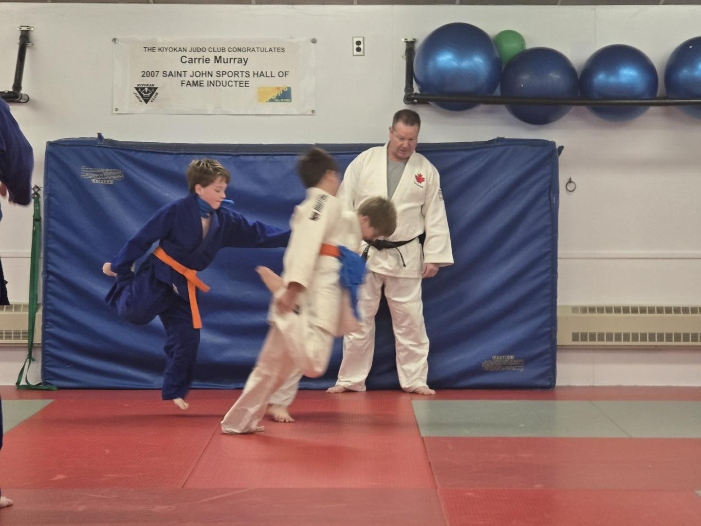
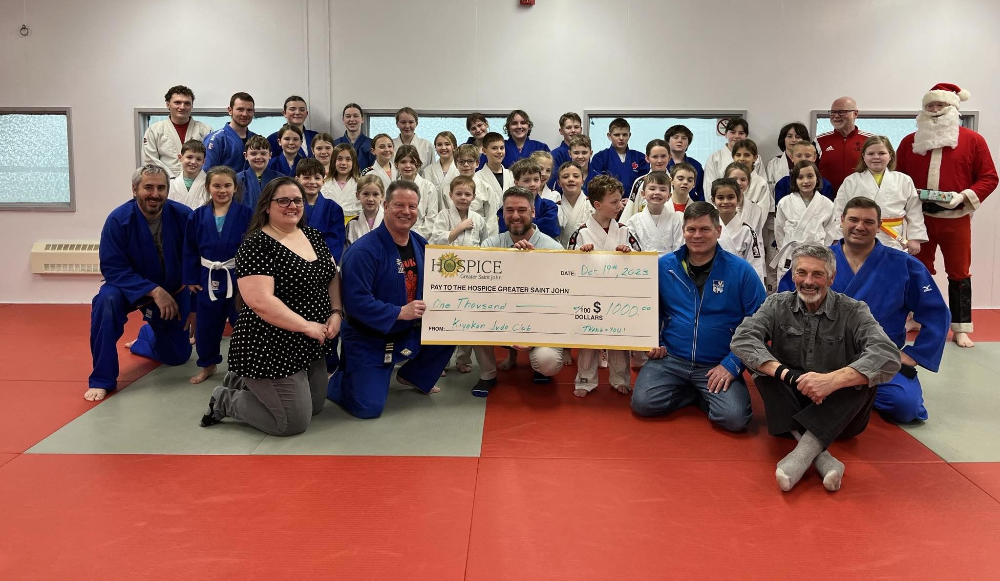

BECOME STRONGER
Start your journey in judo with our experienced instructors. Perfect for beginners and advanced judokas.

CLASSES
From fundamentals to advanced techniques, we offer classes for all skill levels and age groups.
TOURNAMENTS
Participate in local and regional tournaments to test your skills and represent our club.
OUR LOCATIONS
Kiyokan Judo Club East
37 McAllister Dr, Saint John, NB E2L 3Y2
Kiyokan Judo Club
711 Dever Rd, Saint John, NB E2M 4J2